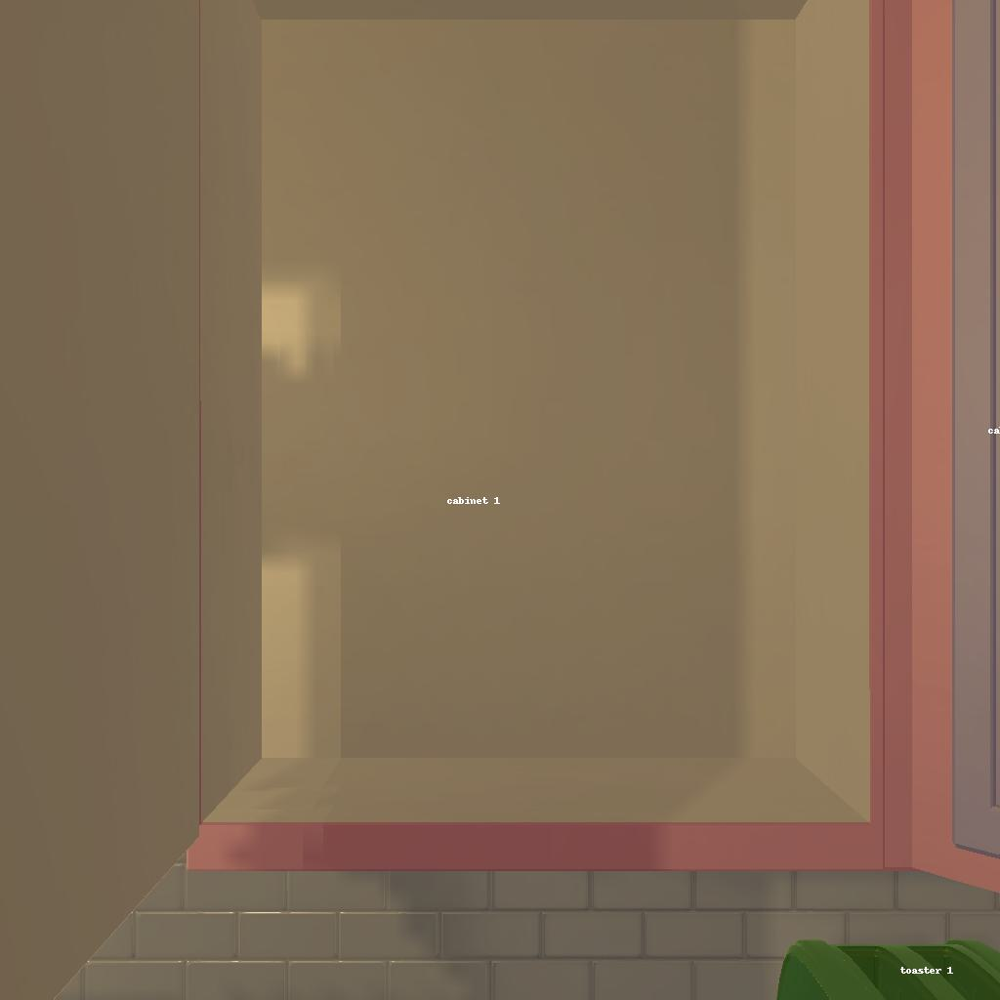

---------------------------------------------------------task: 10---------------------------------------------------------
--------------------------------------------------------------------------------------------------------------------------------------------------------------------
--------------------------------------------------------------------------------------------------------------------------------------------------------------------
Step:--------------------------------------------------------------------------15-------------------------------------------------------------------------------
----------------------------------------
VLM Prompt:
Image1:
**Instruction**
1. Analyze the provided image to identify all visible household objects, focusing on those relevant to the task description "clean some plate and put it in countertop."
2. Use the analysis of the image and the task hint "The agent must find an object of the desired type, pick it up, go to a sink or a basin, clean the object with a sink or basin, and then find the correct location to place it and put it down there. The agent does not need to use soap bottle or faucet to clean the object, and the agent just needs to do action that is "clean the object with the sink or sink basin"." to answer the question: what is the most reasonable action in the choices for the task description "clean some plate and put it in countertop"?
4. Decide and write the answer using the template: The answer is: (i): , where i is the real number. If there is no desired object in the image, search every place based on **Initial Observation** to find the object. And if no one is exactly correct, choose a similar answer.
**Initial Observation**
You are in the middle of a room. Looking quickly around you, you can see cabinet (1-20), toaster (1), microwave (1), garbagecan (1), countertop (1-2), drawer (1-4), stoveburner (1-4), sinkbasin (1), sink (1), fridge (1), diningtable (1), coffeemachine (1)
**Answer Choices**
(1): go to cabinet 2
(2): go to cabinet 3
(3): go to toaster 1
(4): go to microwave 1
(5): go to garbagecan 1
(6): go to countertop 1
(7): go to drawer 1
(8): go to cabinet 6
(9): go to cabinet 7
(10): go to drawer 2
(11): go to stoveburner 1
(12): go to stoveburner 2
(13): go to countertop 2
(14): go to cabinet 8
(15): go to cabinet 9
(16): go to cabinet 10
(17): go to drawer 3
(18): go to drawer 4
(19): go to stoveburner 3
(20): go to stoveburner 4
(21): go to cabinet 11
(22): go to cabinet 12
(23): go to cabinet 13
(24): go to cabinet 14
(25): go to sinkbasin 1
(26): go to sink 1
(27): go to cabinet 15
(28): go to fridge 1
(29): go to cabinet 16
(30): go to cabinet 17
(31): go to cabinet 18
(32): go to cabinet 19
(33): go to diningtable 1
(34): go to coffeemachine 1
(35): go to cabinet 20
(36): open cabinet 1
(37): close cabinet 1
(38): take nothing from cabinet 1
(39): examine cabinet 1
**Answer**
Let's think step by step by following the instructions.
----------------------------------------
----------------------------------------
Original Response:
The task is to clean some plates and put them on the countertop. From the initial observation, we know that there are cabinets, drawers, a sink basin, and a sink that could potentially contain plates. Since plates are not usually stored in appliances like toasters, microwaves, or garbage cans, we can eliminate those options. To perform the task, the agent would first need to find a plate, which is likely stored in a cabinet or drawer. After obtaining the plate, the agent would then go to the sink or sink basin to clean it. Finally, the agent would need to go to the countertop to place the cleaned plate.
Analyzing the image, we see "cabinet 1" visible. The instructions do not mention that the agent already has a plate, so the first step should be to search for one. Since "cabinet 1" is visible and could reasonably contain plates, the most appropriate action from the provided choices would be to open "cabinet 1" to look for a plate.
The answer is: (36): open cabinet 1.
----------------------------------------
----------------------------------------
>>> Refine Original VLM Response and Get Pure Action: open cabinet 1
----------------------------------------
-----------------------------------------------------------------
Running time: 8.670814037322998 seconds
Total Money: 3.278300000000001
-----------------------------------------------------------------
-----------------------------------------------------------------
Text Observation:Nothing happens.
-----------------------------------------------------------------
UNSUCCEED